A decision-support ranking engine that scores 30,000 content pages across 32 clients, assigns refresh priorities, and explains why — using 52 engineered features and five models under client-aware validation.
Abstract. Content pages lose search visibility over time, but prioritizing which pages to refresh is a manual, reactive process. We frame this as a binary classification task — predicting whether a page's impressions are declining — and build a ranked action engine on top of the model. Using 30,000 pages across 32 pseudonymized clients with 52 engineered features (momentum, traffic, content, and engagement signals), we train five models under client-holdout validation and GroupKFold cross-validation. The best model (LightGBM) achieves ROC AUC 0.995 and Average Precision 0.997 on held-out clients, substantially outperforming the stale-first heuristic baseline (ROC AUC 0.537). The action engine assigns each page a priority score (0–100), a suggested action (refresh, review CTR, expand, protect, monitor), and human-readable reason codes — producing a decision-support queue rather than a black-box prediction.
SEO content platforms monitor thousands of pages across dozens of clients. When a page's search impressions decline, the fix is a content refresh — but identifying which pages need attention, and why, is reactive and manual. Content managers drown in dashboards; the question they need answered is simple: what should I work on today?
Can we predict, from observable page-level metrics, which content pages are declining in search visibility — and rank them by priority for a refresh action?
A content manager receives a priority-ranked queue. Each page has a score (0–100), a suggested action (refresh, review CTR, expand, protect, monitor), and human-readable reason codes. This is decision-support, not a causal claim. We observe patterns in historical data. We do not predict Google's algorithm.
Source: content_refresh_anonymized.csv — a teaching slice from the
FlyRank internship warehouse. Each row is one content item (page) with 90-day aggregated GSC
and GA4 metrics, 30-day comparison windows, keyword context, and content properties.
The full warehouse on Hugging Face has ~79M rows; this capstone uses the slice with a
documented path to scale via DuckDB + hf://.
Derived from comparing impressions_last_30d vs impressions_prev_30d:
down if decline exceeds 20%, up if growth exceeds 20%, else
stable, flat, or new.
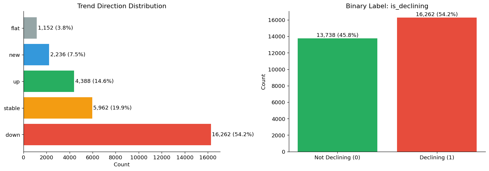
Keyword-context columns (search_volume, competition, cpc)
are 100% missing for feedly article rows. provider_used is 71% missing.
A blind fillna(0) silently encodes content type into features.
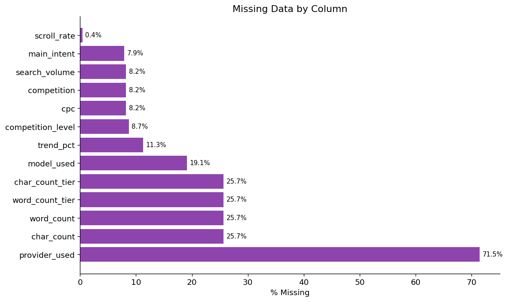
Declining rates range from 0% to 94% across clients. Page counts range from 3 to 7,008. A random row split would leak client-specific patterns into the test set.
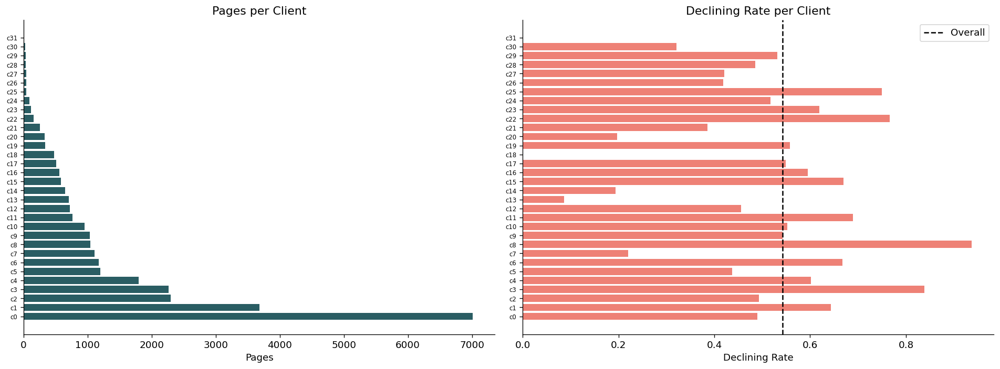
trend_direction, trend_pct — label-derived (leakage)content_id, client_id — identifiers (grouping only)provider_used, model_used — not model features
Binary: is_declining = (trend_direction == "down") — 54.2% positive rate.
Also tested 3-class and regression formulations; binary gives the clearest decision boundary
for the action engine.
trend or decline.
Label-derived columns excluded programmatically. Verified in capstone_feature_config.json.
| Model | ROC AUC | Avg Precision | F1 | P@50 | Brier | CV AUC (5-fold) |
|---|---|---|---|---|---|---|
| Logistic Regression | 0.920 | 0.948 | 0.881 | 1.000 | 0.115 | 0.929 ± 0.035 |
| Random Forest | 0.985 | 0.991 | 0.942 | 1.000 | 0.062 | 0.990 ± 0.010 |
| XGBoost | 0.994 | 0.997 | 0.965 | 1.000 | 0.031 | 0.993 ± 0.008 |
| ★ LightGBM | 0.995 | 0.997 | 0.975 | 1.000 | 0.025 | 0.993 ± 0.008 |
| Extra Trees | 0.785 | 0.812 | 0.775 | 0.860 | 0.193 | 0.822 ± 0.025 |
| Stale-first rule | 0.537 | 0.683 | — | 0.240 | — | — |
| Random | 0.500 | 0.618 | — | 0.600 | — | — |
| Majority class | 0.500 | 0.617 | 0.000 | 0.617 | — | — |
+85.2% relative improvement over the stale-first baseline. Precision@50 = 1.000 for the top four models — the top-50 ranked pages are all genuinely declining. The model doesn't just classify; it ranks.
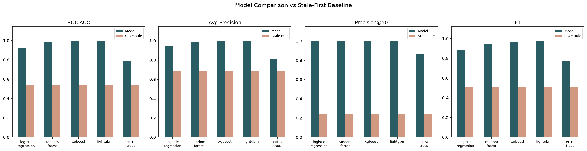
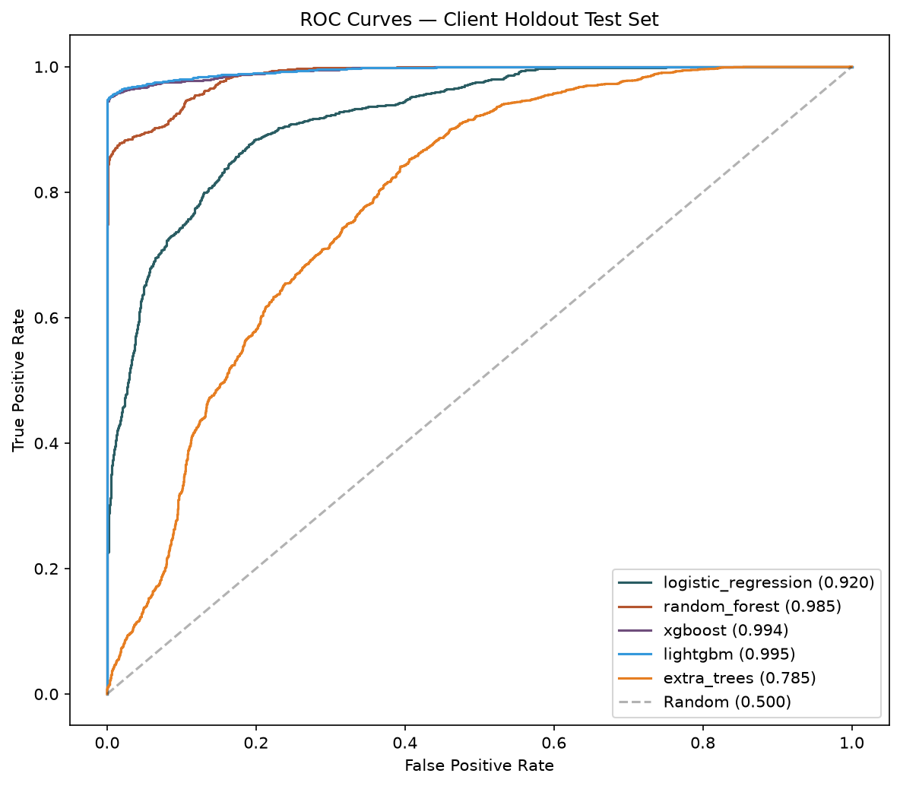
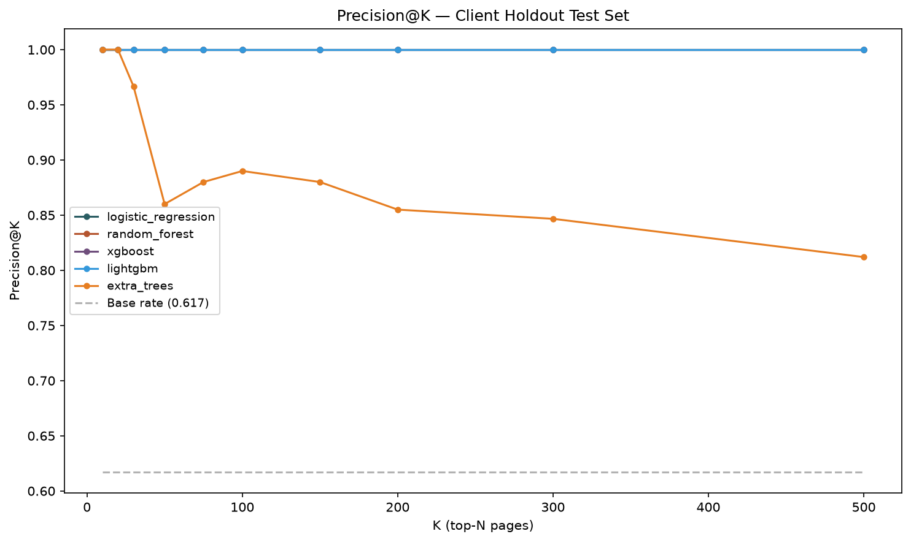
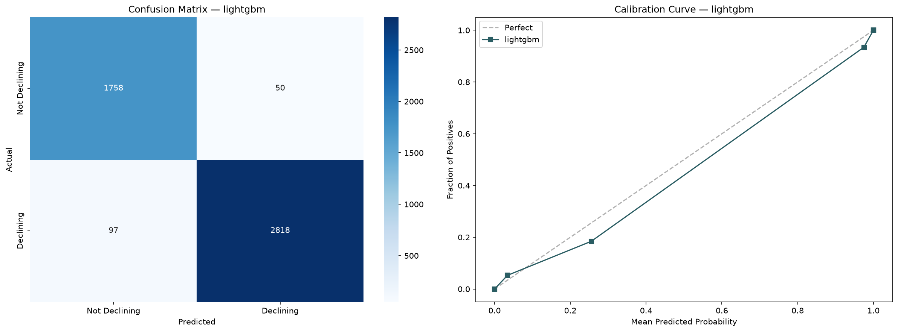
impression_momentum (last-30 / prev-30 ratio) dominates at 63% — expected, since the
label is defined from the same comparison. The model's value is prioritization and reason codes,
not early detection.
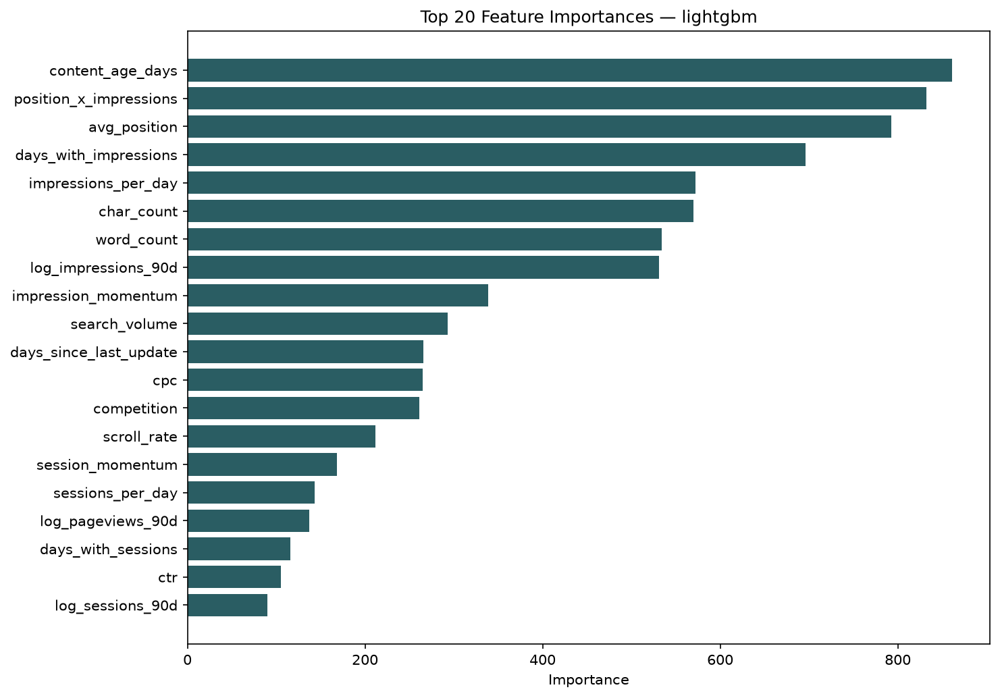
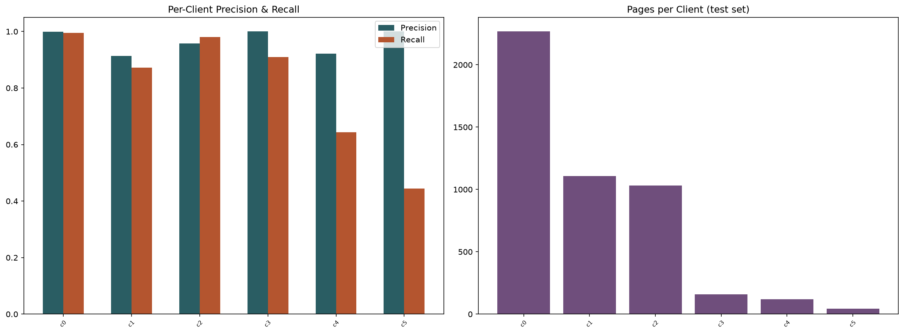
97 false negatives, 50 false positives (error rate 3.1%). False negatives concentrate among low-traffic pages (<100 impressions) where signal is weakest. False positives cluster around high-traffic stable pages — the model is slightly over-sensitive to volume changes.
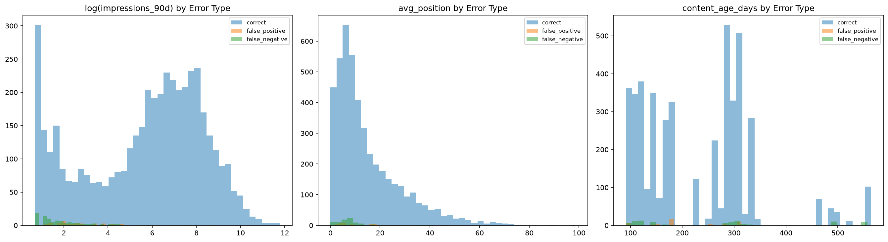
hf://, but results reflect the slice only.impression_momentum carries 63% of importance. The model detects decline, not leading indicators. The action engine's value is prioritization, not early warning.has_position.The action engine processes each page through three layers: model probability → rule-based reason codes → action mapping + priority score. The output is a daily queue a content manager can act on immediately.
| Action | Count | Meaning |
|---|---|---|
| refresh | 1,419 | Model flags decline risk; refresh to recover visibility |
| refresh_and_review_ctr | 1,194 | Declining + low CTR at visible position; check title/meta |
| monitor | 1,136 | No strong signal; periodic review |
| protect | 557 | Growing page; protect from unnecessary changes |
| refresh_and_review_engagement | 378 | Declining + low engagement; review UX/content quality |
| 39 | Thin content (<1000 words) with traffic; expand |
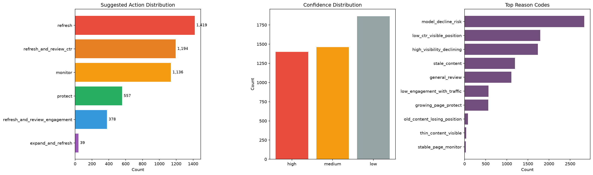
| Code | Count | Trigger |
|---|---|---|
model_decline_risk | 2,832 | Model probability ≥ 0.65 |
low_ctr_visible_position | 1,791 | CTR < 0.5% at position ≤ 20, ≥100 impressions |
high_visibility_declining | 1,733 | ≥500 impressions + probability ≥ 0.5 |
stale_content | 1,193 | Days since update > 90 |
low_engagement_with_traffic | 567 | Engagement < 30% with ≥30 sessions |
growing_page_protect | 560 | Probability < 0.3 + ≥500 impressions |
old_content_losing_position | 79 | Days since update > 180 |
thin_content_visible | 39 | Word count < 1000 + ≥100 impressions |
Full queue: outputs/capstone_refresh_queue.csv (4,723 rows).
Top 50/100 subsets exported for daily review.
capstone_eda.ipynb — distributions, missingness, per-client, correlation, momentumcapstone_features.ipynb — 52 features, 3 label formulations, leakage checkcapstone_model.ipynb — 5 models, GroupKFold CV, evaluation, chartscapstone_action_engine.ipynb — priority queue, reason codes, confidencescripts/capstone_run_model.py — full model pipeline (reproduces all results)scripts/capstone_run_action_engine.py — action engine (reproduces queue)
Python 3.14 · scikit-learn 1.9 · XGBoost 3.4 · LightGBM 4.7 · seed = 42.
python scripts/capstone_run_model.py && python scripts/capstone_run_action_engine.py
The pipeline scales to the 79M-row Hugging Face release via DuckDB + hf://.
Replacing the CSV load with a DuckDB query on fact_content_daily_performance
adds time-series features (volatility, trend slopes, day-of-week patterns) and enables
a true forward-looking label.
Built on the FlyRank ML Internship dataset.
All client names, domains, and URLs are pseudonymized.
No private data is displayed or stored in this repository.